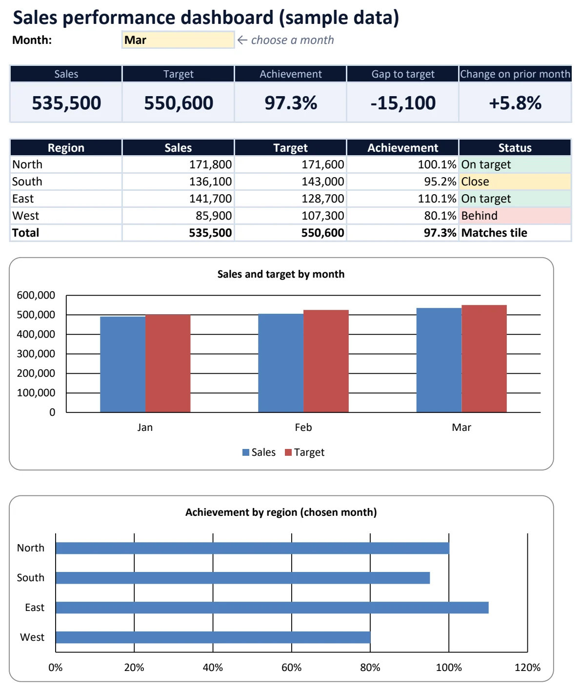

A monthly report often starts as a quick spreadsheet and grows until only one person can update it. Numbers get typed over, a total stops matching, and the meeting turns into a discussion about which figure is right. A dashboard is meant to prevent that: one screen that answers a few agreed questions, fed by data that is entered once.
This guide builds a small sales dashboard in Excel. You can download the finished workbook, change its made-up data and follow every step.
Download the example dashboard (.xlsx)

1. Decide what the dashboard must answer
Write the questions down before you open Excel. A dashboard that tries to show everything gets read by nobody. For a monthly sales review, five are usually enough to start:
- How much did we sell this month?
- How does that compare with the target?
- Is it better or worse than last month?
- Which areas are behind?
- Can I trust these figures?
For each question, agree the definition. Does "sales" mean orders taken, goods dispatched or invoices raised? Are returns deducted? Which date decides the month? If two departments answer differently, no formula will settle it.
2. Lay out the data so formulas can read it
Keep raw data on its own sheet, with one row per record and one column per fact. The example has six columns: Date, Month, Region, Product, Sales and Target, and 36 rows (four regions, three products, three months).
- One header row, with no merged cells and no blank rows inside the data.
- No subtotal rows. Totals belong in formulas, or you will count them twice.
- Spell categories the same way every time. "North" and "North " with a space are different values.
- Store numbers as numbers and dates as dates, not as text.
The example data is formatted as an Excel table. A table keeps its formatting as you add rows and makes the data easier to filter. The workbook's formulas read rows 2 to 500; extend that if your data grows beyond it, or switch to the table's column names.
3. Keep calculations on a separate sheet
Use three layers: Data (what happened), Calc (summaries and checks) and Dashboard (what the reader sees). When something looks wrong, you can trace it one layer at a time.
The workhorse formula is SUMIFS. This one totals sales for the month chosen in cell C2 of the dashboard:
=SUMIFS(Data!$E$2:$E$500, Data!$B$2:$B$500, $C$2)The first range is what to add. After it come pairs: a range to test and the value it must match. For the regional table, add a second pair for the region name. The dollar signs keep the ranges fixed when you copy the formula. See the SUMIFS card in the formula library for another worked example.
4. Build the headline tiles
Tiles answer the first three questions at a glance. With March selected, the example shows:
| Tile | How it is worked out | March |
|---|---|---|
| Sales | SUMIFS of sales for the month | 535,500 |
| Target | SUMIFS of target for the month | 550,600 |
| Achievement | Sales ÷ target | 97.3% |
| Gap to target | Sales − target | −15,100 |
| Change on prior month | This month ÷ last month − 1 | +5.8% |
Show the gap as an amount as well as a percentage. "97.3%" sounds close; "15,100 short" tells people the size of the job.
Read the last two tiles together. March sales were 5.8% higher than February, yet still below target, because the target also rose, by about 4.8%. Growth and achievement answer different questions, so a dashboard needs both.
January has no earlier month in the sample, so that tile shows "n/a". Showing 0% would suggest that sales had not changed, which is not what the data says.
5. Add a month selector
Instead of building one dashboard per month, put the month in a single cell and let every formula read it. In the example, cell C2 has a drop-down list made with Data Validation: select the cell, choose Data, then Data Validation, allow a List, and enter the month names.
A list also stops typing mistakes. "March" typed where the data says "Mar" would return zero without any warning.
6. Show where the gap comes from
A total hides differences. The regional table for March is what turns the report into an action list:
| Region | Sales | Target | Achievement | Difference |
|---|---|---|---|---|
| North | 171,800 | 171,600 | 100.1% | +200 |
| South | 136,100 | 143,000 | 95.2% | −6,900 |
| East | 141,700 | 128,700 | 110.1% | +13,000 |
| West | 85,900 | 107,300 | 80.1% | −21,400 |
West alone is 21,400 short, more than the whole company's gap of 15,100. East's surplus hides part of it.
Never average the percentages to get a total. The simple average of the four achievement figures is 96.4%, but the real achievement is 97.3%, because the regions have targets of different sizes. Divide total sales by total target.
7. Use status colours with words
The Status column uses one formula, then conditional formatting colours the word:
=IF(E8>=1, "On target", IF(E8>=0.9, "Close", "Behind"))The 90% line is a choice made for this example, not a standard. Agree your own limits before the period starts. Keep the words as well as the colours: some readers cannot tell red from green, and printed copies may be in black and white. Our colour contrast guide explains more.
8. Choose charts for the question
- Sales against target by month: side-by-side columns show whether the gap is growing or shrinking.
- Achievement by region: horizontal bars make names easy to read and the weakest area easy to spot.
Start column and bar charts at zero. A shortened axis can make a 2% difference look enormous. Avoid 3D effects, and avoid pie charts when you need to compare similar values. Give each chart a title that says what it shows and for which period. In the example, the monthly chart always shows all three months, while the regional chart follows the selected month, so each title should make that clear.
9. Build checks you can see
This step is often skipped, and it is the one that protects your reputation. The example has two checks:
- Data against months: the total of all sales rows (1,533,200) must equal the sum of the three monthly totals. If a month is misspelled, the two differ and the cell shows CHECK DATA.
- Table against tile: the sum of the regional table must equal the sales tile. This catches a region that is missing from the table.
We tested the first check by changing one "Jan" to "Jam" in a copy of the data. The warning appeared. Also compare the dashboard total with your accounting or order system before you share it. Internal checks cannot tell you that a whole file was never imported.
10. Update it the same way every time
- Paste the new rows under the existing data, using the same columns.
- Check that month, region and product names match the existing spelling.
- Select the new month on the dashboard.
- Read both check cells.
- Compare the total with the source system.
- Save a dated copy of what you sent.
When you add a new month, also add it to the Calc table, the chart range and the drop-down list. When you add a new region, add a row to the regional table. A sample spanning more than one year needs a Year column in every SUMIFS, or January of both years will be added together.
To limit accidental changes, you can protect the Calc and Dashboard sheets and leave the month cell unlocked. Treat sheet protection as a guard against mistakes, not as security for confidential data.
When formulas are not the best tool
- PivotTables summarise large lists quickly and let you drag fields to explore. Refresh them after the data changes.
- Power Query can record the steps that clean a monthly export, so you can refresh instead of repeating them by hand.
- A reporting platform is worth considering when many people need live figures, access has to be restricted by person, or the files have become slow or hard to control.
Advantages and limits of an Excel dashboard
Advantages: most teams already know Excel, every calculation can be inspected, and you can change the layout in minutes.
Limits: someone has to bring the data in, copies multiply when files are emailed around, one overwritten formula can spoil a report without being noticed, and an Excel file is not a database. A dashboard also shows what happened, not why. Plan time to ask the people closest to the numbers.
Common mistakes
- Typing a number over a formula to "fix" it.
- Mixing data, calculations and presentation on one sheet.
- Showing 20 measures with no sign of which matter.
- Comparing a part month with a full month. Compare the same number of selling days.
- Averaging percentages.
- Sharing a report without stating the data date.
Practical next steps
Start with five questions and one data sheet. Add a check before you add a chart. After two reporting cycles, ask readers what they did not use and remove it. To work out the daily sales needed for the rest of a month, use the Sales Target Calculator. For a score across several measures, see the weighted KPI scorecard guide. If you prefer a ready-made file, the sales target tracker template is in the shop.
Frequently asked questions
What is the difference between a report and a dashboard?
A report usually gives detail for reading. A dashboard shows a small set of measures for a quick decision, with detail available when needed.
How many measures should one dashboard show?
There is no fixed number. Include only those that lead to a question or an action. If nobody can say what they would do when a figure changes, leave it out.
Why does my SUMIFS return zero?
The usual causes are text that does not match exactly, extra spaces, numbers stored as text, or ranges that do not cover the data. Test one condition at a time to find which pair fails.
Which Excel version do I need for the example?
It uses SUMIFS, IFERROR, INDEX, MATCH and IF, which have been in Excel for many versions. It was checked in Microsoft Excel (version 16.0). Older versions and other spreadsheet programs were not tested.
Can I use it for purchases, production or service work?
Yes, if the data has the same shape: a period, a category, an actual value and a target. Rename the columns and labels, then run the checks again.
How often should a dashboard be updated?
As often as someone will act on it. A daily dashboard that is read monthly costs effort without helping. Always show the date of the latest data.
References
- Microsoft Support: SUMIFS. Syntax for adding values with several conditions.
- Microsoft Support: Overview of Excel tables. How tables work.
- Microsoft Support: Create a drop-down list. The Data Validation list used for the month selector.
- Microsoft Support: Conditional formatting. Colouring cells by rule.
- Microsoft Support: Create a chart. Adding and formatting charts.
- Microsoft Support: Create a PivotTable. Including how to refresh it.
- Microsoft Support: About Power Query. Importing and transforming data.
- Microsoft Support: Protect a worksheet. Locking cells against accidental changes.
Links checked on 25 November 2026.